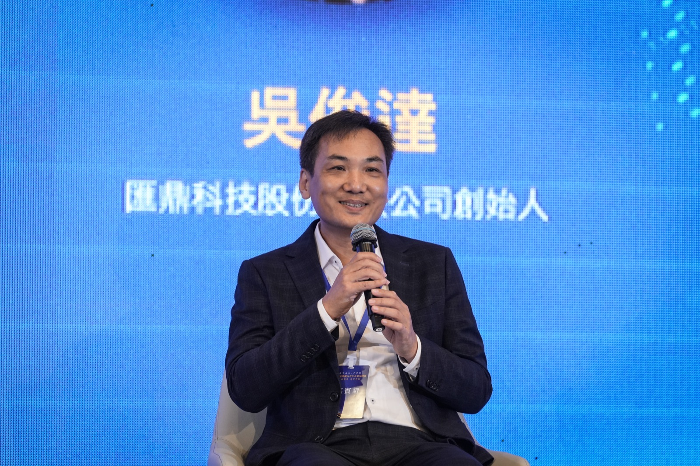
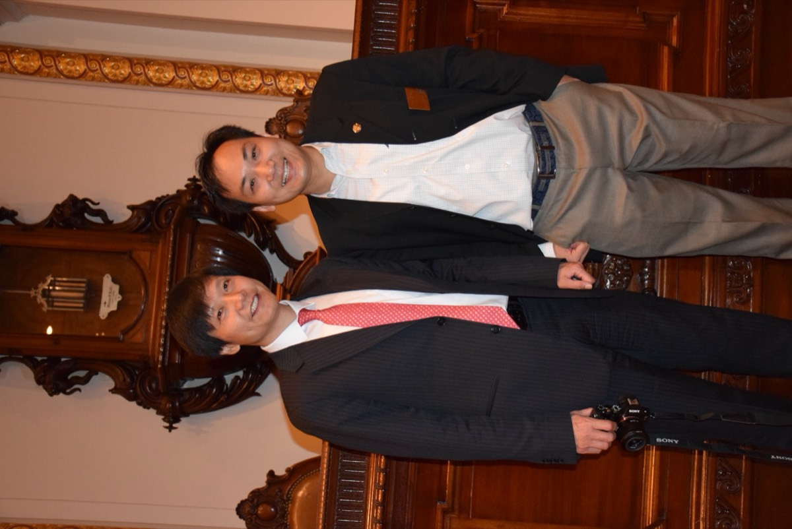
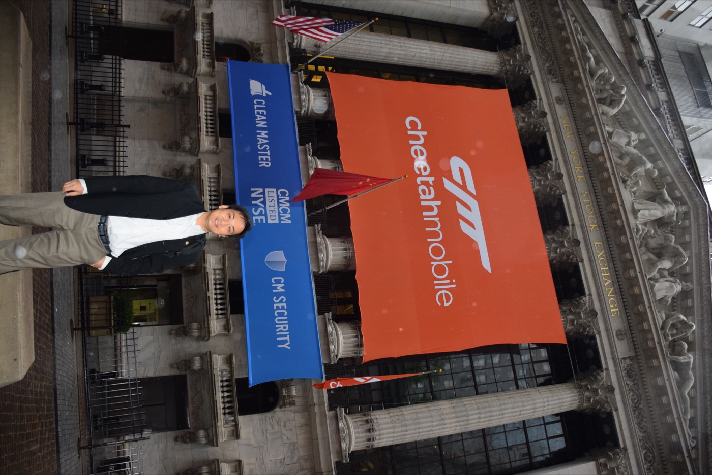
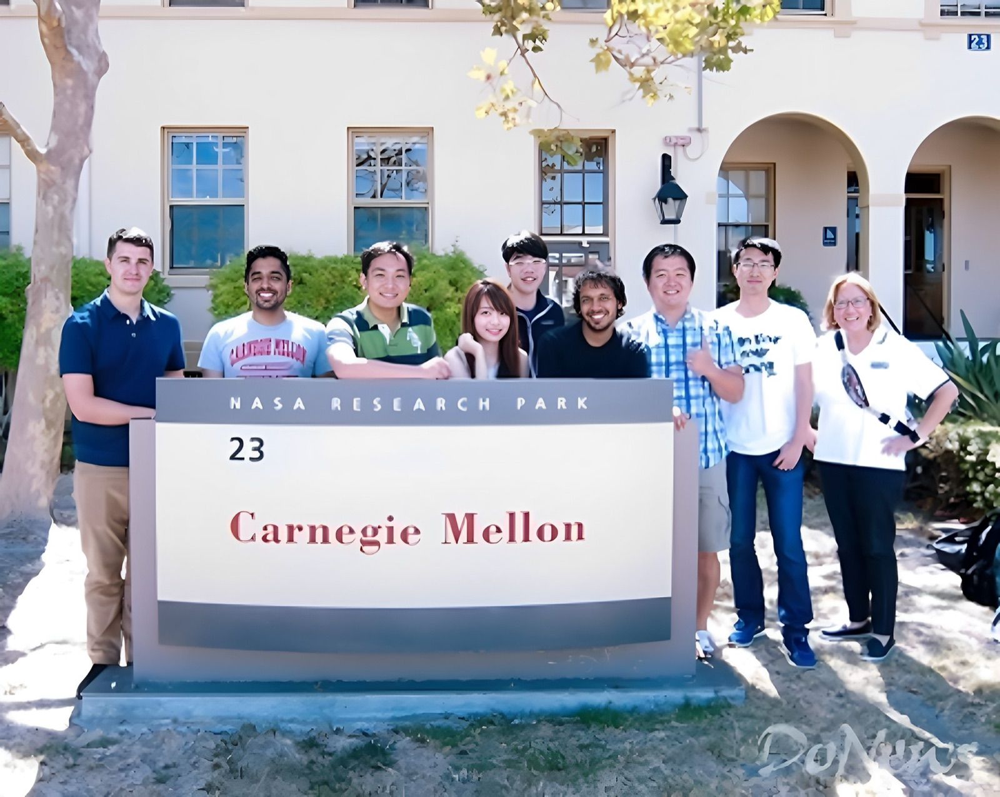
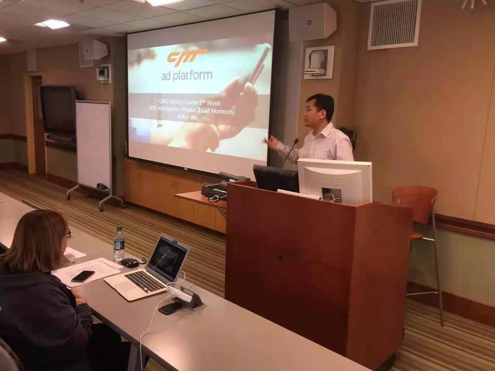
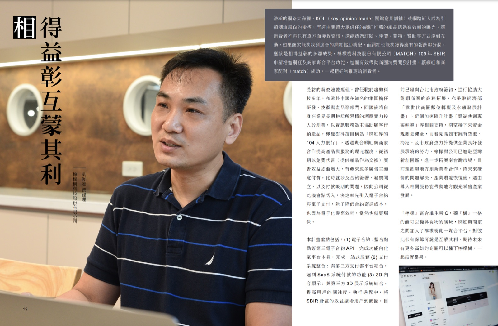
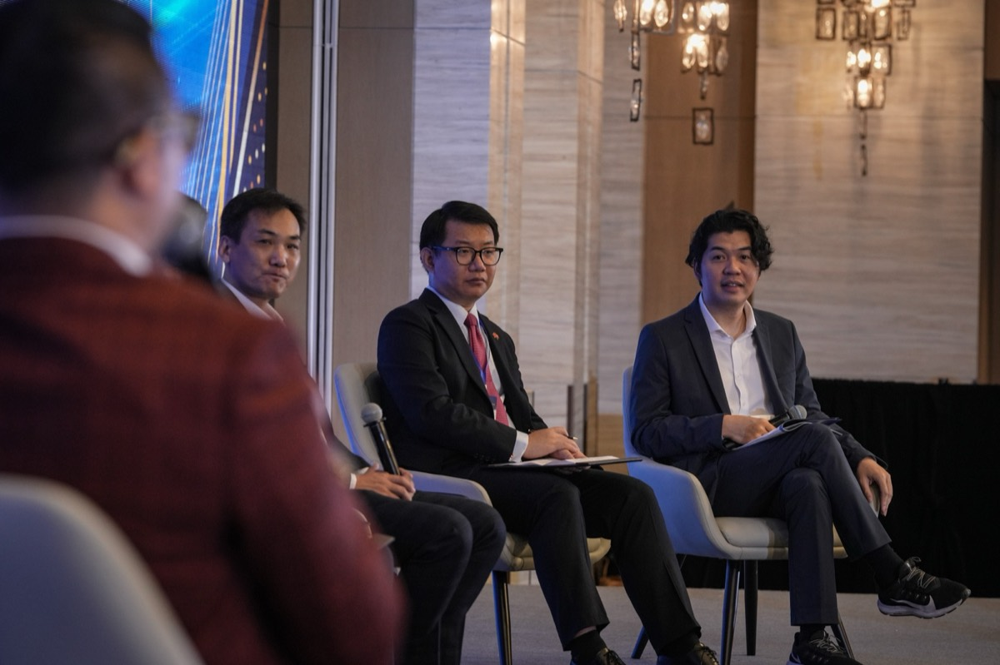
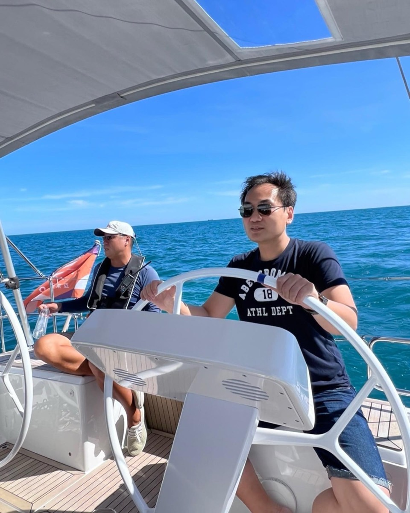
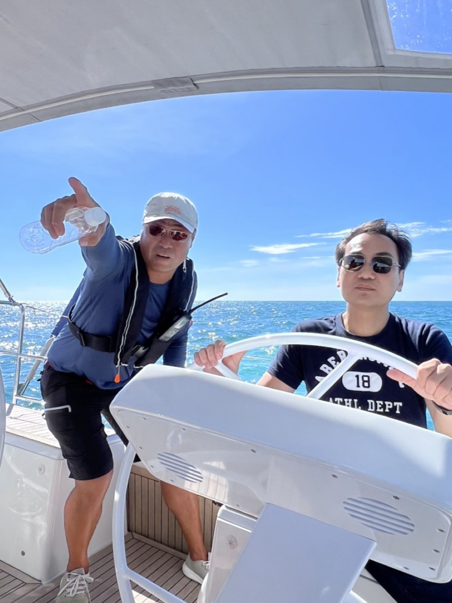

敲過紐交所的鐘，
站過 CMU 的講台，
現在，我幫你創業
吳俊達 Arthur Wu。20 年横跨美國、中國、香港、台灣的科技產業實戰——趨勢科技台灣研發站協理、獵豹移動（NYSE:CMCM）商業總負責人、抖音美國歐洲區商業總負責人、卡內基美隆大學講師。現在的身分只有一個：幫創業者成長的教練。

二十年，四個城市，一個信念
每一段經歷都不是頭銜，是後來能幫你創業的養分。
台北
趨勢科技・台灣研發站協理
在台灣最國際化的軟體公司做了 15 年資安研發，一路做到台灣研發站協理。期間以發明人身分取得四項美國專利——涵蓋惡意程式偵測、雲端安全與虛擬機防禦。這段工程師的創新訓練，成了他後來看懂商業模式的底層能力。
北京
獵豹移動・商業總負責人
「在資安領域工作 15 年了，該換個工作吧！」獵豹執行長傅盛親自找上門，41 歲的他離開舒適圈北上。帶隊操盤 Clean Master（全球一億下載、月活 6 億用戶）的商業化，寫下行動營收連續 11 季翻倍的紀錄——這段故事被工商時報以「職場達人」專題報導。

紐約
紐約證交所・敲鐘那一天
2014 年 5 月 8 日，獵豹移動（NYSE:CMCM）在紐約證交所掛牌上市。作為商業核心成員站上敲鐘台，與時任董事長雷軍（小米創辦人）並肩合影。華爾街的那面獵豹橘，是台灣工程師用十年拼出來的。



矽谷
卡內基美隆大學（CMU）・兼任講師
受聘於 CMU 矽谷校區資訊網路研究院（INI），開設「14-844: Mobile Advertising」課程。CMU 是全球 AI 研究重鎮——能站上這個講台的，是被驗證過的實戰。美通社（PR Newswire）官方新聞稿見證了這段產學合作。



美國・歐洲
抖音・美國歐洲區商業總負責人
在短影音改變世界之前，就在最前線操盤。DIGIDAY 專訪中，他以 Musical.ly（TikTok 前身）商業化操盤者的身分，談網紅行銷的三贏策略。全球流量的玩法，他不是讀來的，是做出來的。
台灣
回台創業・把補助案自己走一遍
回到台灣連續創業：網紅媒合平台 MATCH（檸檬樹科技）、共享衣櫥 AMAZE（三立專訪）、美商 LUCID 台灣站。過程中親自申請、親自過案——高雄市 SBIR（獲績優廠商頒獎）、台北市品牌補助 300 萬、科技部 TIEC 前進矽谷計畫、美國 SOSV 加速器投資。也是嬰兒科技獨角獸 CUBO AI 的創始股東。


台灣→世界
亞瑟教練・幫創業者長出一人公司
經濟部指導、中小企業信用保證基金主辦的全國巡迴講座，邀請他主講「政府補助案 AI 實戰撰寫」；台北科大 EMBA、宜蘭大學 EMBA 客座講師；桃園安東青創基地顧問暨評審委員（政府聘書）；2024 港粵澳台青年企業家峰會與談人。250+ 家企業跟他學申請補助，累計過案超過 5,000 萬。他把 20 年的路，鋪成你的捷徑：政府補助案課程與過案心法、行銷自動化課程、AI 代理人系統——讓一個人，也能是一家公司。

「我拿過大公司的資源，
也吃過小公司的苦。」
在獵豹和抖音，我看過幾億用戶的系統怎麼運轉；回台灣創業，我也體會過一個人當十個人用的日子。這兩種經驗加起來，我很確定一件事：台灣創業者不缺能力，缺的是資源跟系統。政府每年有上百億的補助預算，AI 工具已經可以取代整個部門的產能——會用的人，一個人就是一家公司；不會用的人，繼續用時間換錢。我教的，就是「會用」這件事。
下了講台，他在海上
2022 年開始追新的夢：考取遊艇與動力小船駕照、完成 ASA101 帆船課程、成為亞果遊艇會首席會員。不開船的日子，就在網球場上。創業像航海——看得懂風向的人，才能把船開到別人到不了的地方。

